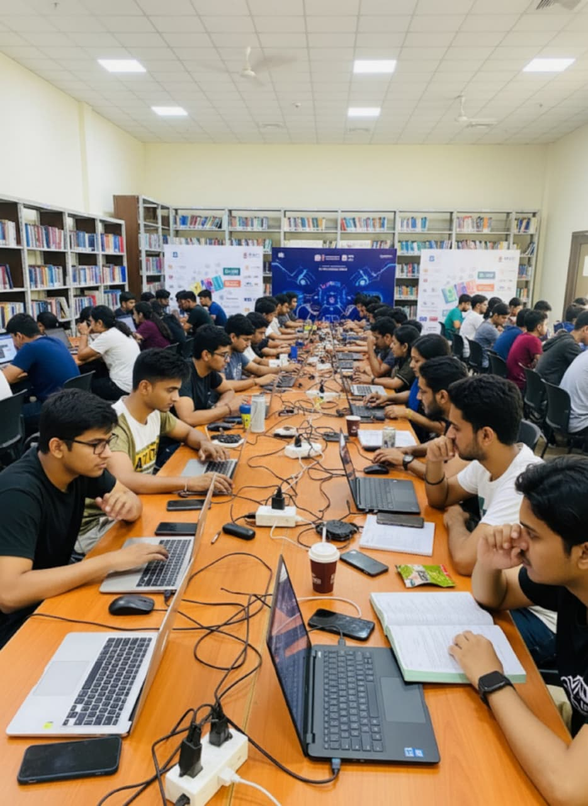
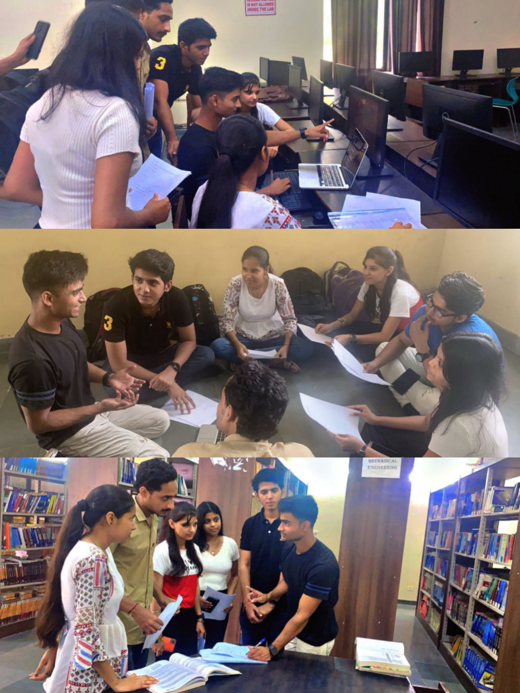
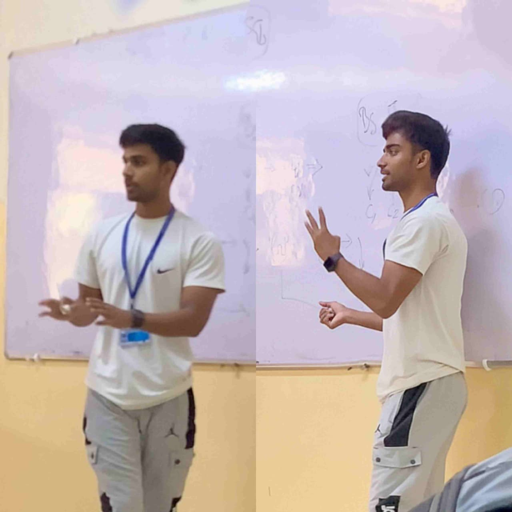
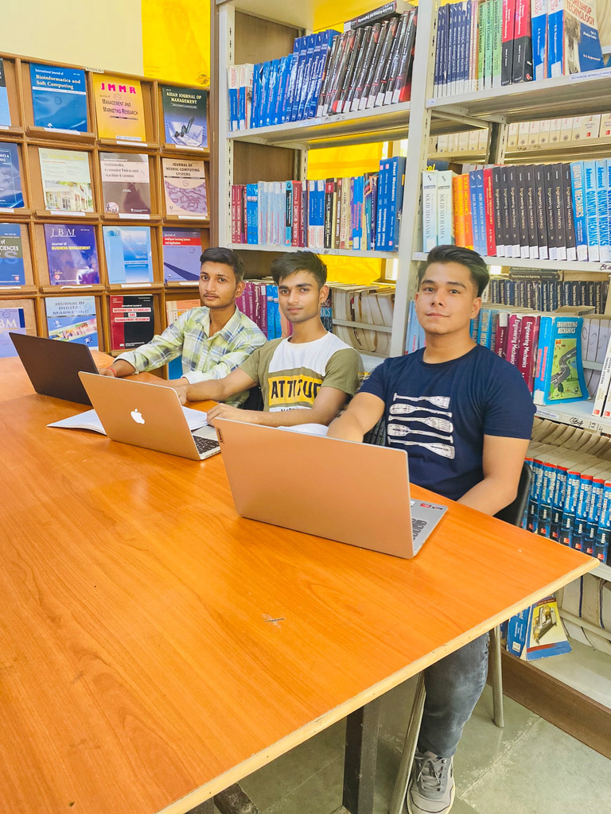
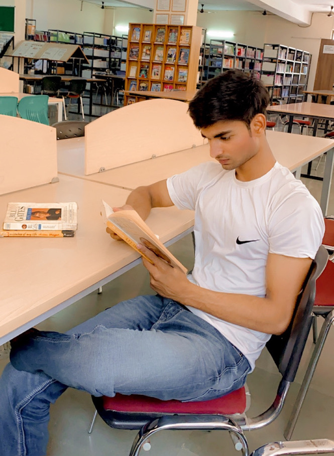
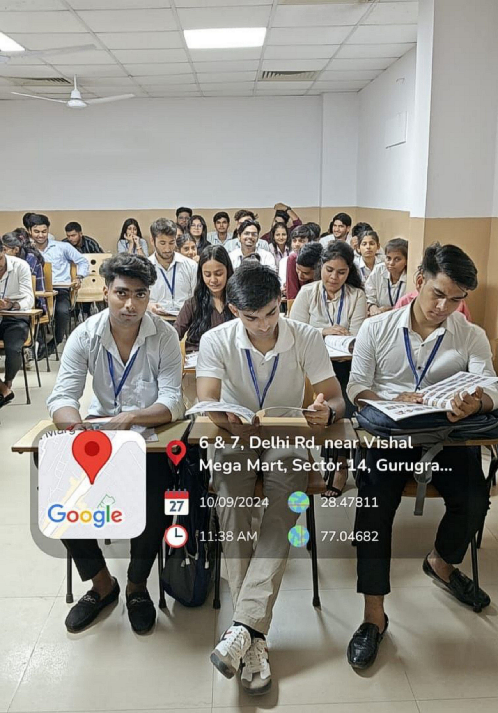

Advancing toward achievement: key moments of growth, exploration, and collaboration.

Tech Hackathon Team
Collaborating with peers to design, develop, and present code solutions under intense constraints. Built microservices and integrated responsive APIs in unified builds.

Software Engineering Division
Acted as technical lead, coordinating deliverables and organizing presentations to outline structural requirements, modules, and code configurations.

Zeesu Development Labs
Exploring how computers, robotics, smart gadgets, and logical operations merge to help design futuristic systems and web-interactive elements.

Innovation Hub
Explaining system architectures, UI animations, and algorithms to development teams. Facilitating reviews and code walk-throughs.

University & Tech Libraries
Devoting hours to studying systems, object-oriented concepts, algorithms, and project planning paradigms through classical text books.

Research Studio
Compiling visual reference logs, system wireframes, and interface ideas on active wallboards to inspire premium UI designs daily.